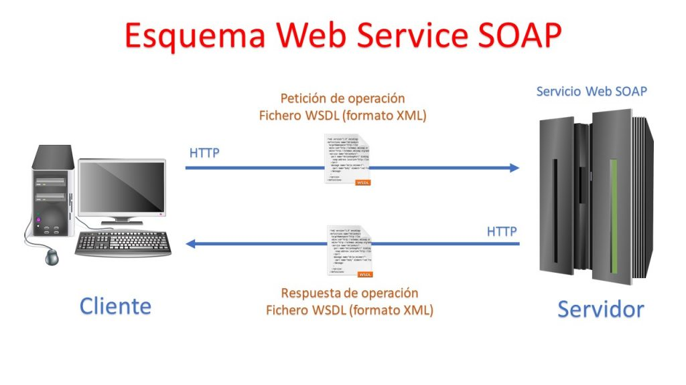

Mecanismos que permiten a dos componentes de software comunicarse
entre sí mediante un conjunto de definiciones y protocolos. (Amazon, 2023)
Una API (interfaz de programación de aplicaciones), es un conjunto de
reglas definidas que permiten que diferentes aplicaciones se comuniquen
entre sí. Actúa como una capa intermedia que procesa las transferencias
de datos entre sistemas, permitiendo a las empresas abrir sus datos y
funcionalidades de aplicaciones a desarrolladores externos, socios
comerciales y departamentos internos dentro de sus empresas. (IBM,
2023).
Ejemplos de APIs:
API de Google: Búsqueda, Gmail, Traductor o Maps.
Paypal
Incrustración de Videos de Youtube
WhatsApp Business
Instagram, Facebook
HTTP (Hypertext Transfer Proto)
Significa Protocolo de Transferencia de Hipertexto (en inglés, Hypertext Transfer Protocol).
Es un protocolo de comunicación utilizado para la transferencia de datos en la World Wide Web.
Es el protocolo base para la comunicación de datos en la web, y se utiliza para la transmisión
de recursos como HTML, imágenes, videos, etc., entre un servidor y un cliente, generalmente un
navegador web
Opera en un modelo cliente-servidor, donde un cliente (como un navegador web) envía una solicitud
HTTP a un servidor, y el servidor responde con los datos solicitados, como una página web. Es un
protocolo sin estado, lo que significa que no guarda información sobre las solicitudes anteriores,
lo que hace que cada solicitud sea independiente de las demás.
URI - HTTP
Es un Identificador de recursos uniformes que sirve para identificar y
localizar la ubicación de un recurso
Clases de URI
URL: Identifica un recurso indicando donde esta y como alcanzarlo
URN: Identifica un recurso mediante su nombre
Es la información que un servidor envía de vuelta a un cliente en respuesta
a una solicitud HTTP. Cuando un cliente, como un navegador web, envía una
solicitud HTTP a un servidor para acceder a un recurso, como una página web
o un archivo, el servidor procesa la solicitud y envía una respuesta al cliente.
es un mensaje enviado por un cliente, como un navegador web, a un servidor para
solicitar la recuperación o el envío de recursos. Cuando un usuario ingresa una
URL en su navegador o hace clic en un enlace, el navegador crea una solicitud HTTP
y la envía al servidor correspondiente para obtener la página web u otro recurso
asociado con esa URL.
PARTES DE HTTP RESPONSE
* Línea de estado: Esta línea contiene un código de estado que indica si la solicitud se procesó
correctamente o si ocurrió algún error.
* Encabezados (headers): Los encabezados contienen información adicional sobre la respuesta,
como la fecha y hora en que se generó la respuesta, el tipo de contenido devuelto, la longitud
del contenido y la configuración de caché.
* Cuerpo de la respuesta (body): El cuerpo de la respuesta contiene los datos reales que el
servidor envía de vuelta al cliente. Esto puede ser HTML para una página web, datos JSON
para una API, una imagen, un archivo de descarga, u otro tipo de contenido
Codigo respuesta de HTTP REPONSE
Le indica al cliente (p.e navegador) como interpretar la respuesta:
1XX: INFORMACION
2XX: ÉXITO
3XX: REDIRECCION
4XX: ERROR DEL CLIENTE
5XX: ERROR DEL SERVIDOR
Significado de Errores de repuesta de HTTP RESPONSE
200 – ok: Existoso. El servidor envía el recurso solicitado en el cuerpo del mensaje
204 – not contebt: Existoso. El mensaje no tiene cuerpo
301 – moved permamently: Redireccion. El recurso se ha movido permanentemente otra URL
302 - found
404 – not found
401 - inauthorized
500 – internal server error
503- service unavailable
PARTES DE HTTP REQUEST
Línea de solicitud (Request line): Esta línea contiene tres partes: el método HTTP, la URL
del recurso solicitado y la versión del protocolo HTTP que se está utilizando.
Encabezados (Headers): Los encabezados contienen información adicional sobre la solicitud,
como el tipo de navegador del cliente, los tipos de contenido que el cliente acepta, cookies, etc.
Cuerpo de la solicitud (Request body): Opcionalmente, algunas solicitudes pueden incluir un cuerpo
que contiene datos adicionales que el cliente quiere enviar al servidor. Por ejemplo, en una solicitud
POST que envía datos de un formulario HTML, el cuerpo de la solicitud contendrá esos datos
METODOS PRINCIPALES DE HTTP REQUEST
GET: solicita un recurso
HOST: crea un recurso
PUT: reemplaza un recurso
DELETE: elimina un recurso
PATCH
HEAD
OPTIONS
ESTRUCTURA DE HTTP DE REQUEST Y RESPONSE
SOAP
SOAP (Simple Object Access Protocol) es un protocolo de comunicación utilizado para intercambiar información
estructurada en la implementación de servicios web. Fue desarrollado para facilitar la comunicación entre sistemas
distribuidos a través de la web
es un protocolo de comunicación basado en XML (Extensible Markup Language) que permite que
aplicaciones en diferentes plataformas se comuniquen entre sí de manera independiente del lenguaje de
programación y el sistema operativo utilizados. Su nombre,"Simple Object Access Protocol", enfatiza
su simplicidad y su capacidad para acceder a objetos en sistemas remotos a través de la web
Características de SOAP
Las principales características de SOAP incluyen:
Basado en XML: SOAP utiliza XML como su formato de mensaje, lo que lo hace legible y
comprensible tanto para humanos como para máquinas.
Protocolo independiente: SOAP no está vinculado a ningún protocolo de transporte específico,
lo que significa que puede utilizarse con una variedad de protocolos, como HTTP, SMTP y más.
Plataforma independiente: SOAP es independiente de la plataforma y el lenguaje de programación,
lo que permite la interoperabilidad entre sistemas heterogéneos.
Lenguaje neutro: SOAP no favorece ningún lenguaje de programación en particular y se puede utilizar
con cualquier lenguaje que admita la creación y el análisis de mensajes XML
Extensibilidad: SOAP permite la inclusión de información adicional en los mensajes, lo que lo hace altamente
extensible y adaptable a diferentes necesidades.
Usabilidad de SOAP
SOAP se utiliza en una variedad de aplicaciones y escenarios, como:
Servicios Web: SOAP es un componente fundamental de los servicios web, donde se utiliza para la comunicación
entre aplicaciones a través de la web.
Integración de sistemas: Se utiliza para integrar sistemas heterogéneos, permitiendo que aplicaciones desarrolladas
en diferentes lenguajes y plataformas se comuniquen de manera efectiva.
Comunicación entre aplicaciones empresariales: Las organizaciones utilizan SOAP para la comunicación entre
aplicaciones empresariales críticas, lo que facilita la automatización de procesos y la transferencia segura de
datos
Funcionamiento de SOAP
El funcionamiento de SOAP implica la creación, envío y recepción de mensajes SOAP. Un mensaje SOAP consta de
un sobre (encabezado) y un cuerpo. El sobre contiene información sobre la estructura y el procesamiento del
mensaje, mientras que el cuerpo contiene los datos a transmitir.
Cuando una aplicación envía una solicitud SOAP a un servicio web, el mensaje se envía al servidor web que aloja
el servicio. El servidor procesa la solicitud, realiza la operación especificada y devuelve una respuesta en forma
de otro mensaje SOAP. Esta respuesta se puede analizar y procesar en la aplicación cliente

REST
Es una logica de Recomendaciones y rectricciones bajo la cual se puede construir una API
y nos sirve para obtener y generar datos y operaciones, devolviendo esos datos en formatos
muy específicos, como XML y JSON.
REST se apoya en HTTP, los verbos que utiliza son exactamente los mismos, con ellos se
puede hacer GET, POST, PUT y DELETE. De aquí surge una alternativa a SOAP. REST llega a
solucionar esa complejidad que añadía SOAP, haciendo mucho más fácil el desarrollo de una
API REST, en este caso de un servicio en el cual nosotros vamos a almacenar nuestra lógica
de negocio y vamos servir los datos con una serie de recursos URL y una serie de datos que
nosotros los limitaremos, es decir, será nuestro BACKEND nuestra lógica pura de negocios
que nosotros vamos a utilizar.
API RESTful
Una API RESTful (Application Programming Interface Representational State Transfer) es una
interfaz de programación de aplicaciones que sigue los principios del estilo arquitectónico REST.
Esto significa que la API está diseñada para aprovechar las características y restricciones de REST,
como el uso de recursos, métodos HTTP y representaciones de datos.
JWT
Un JWT es un estándar para la autenticación y el intercambio de información definido por RFC7519.
Es posible almacenar objetos JSON de forma segura y compacta. Este token es un códigoBase64 y se
puede firmar con un par de claves secretas o privadas/públicas. Si un JWT está firmado por un par
de claves pública/privada, la empresa certifica que la parte que tiene la clave privada está
realmente firmada
UTILIZACIÓN
Se puede utilizar, por ejemplo, en un escenario de autorización. Una vez que el usuario haya iniciado sesión, puede
ver cada solicitud y verificar que incluye el JWT, lo que le permite acceder a rutas, servicios y otros recursos
ESPECIFICACIONES JWT
JWT es parte de esta familia de especificaciones y representa el token. A continuación, puedes ver otras especificaciones
de esta familia:
* JWT (JSON Web Tokens): representa el propio token;
* JWS (JSON Web Signature): representa la firma del token;
* JWE (JSON Web Encryption): representa la firma para el cifrado de tokens;
* JWK (JSON Web Keys): representa las claves para la firma;
* JWA (JSON Web Algorithms): representa los algoritmos para firmar el token;
ESTRUCTURA
Un JWT tiene una estructura básica compuesta por encabezado, carga útil y firma. Estas tres
partes están separadas por puntos ( . ). De esta forma quedaría algo así como:
header.payload.signature. ¡Comprendamos mejor cada una de estas partes!
Header
Headers son los encabezados del token donde
pasamos básicamente dos piezas de información: el
alg que informa qué algoritmo se usa para crear la
firma y el typ que indica el tipo de token.
{
"alg": "HS256",
"typ": "JWT"
}
Payload
El payload es el componente donde podemos
encontrar datos de autenticación como contraseñas y
correos electrónicos, por ejemplo:
{
"email" : "nombre@alura.com.br"
"password" : "HuEKW489!j445*"
}
Signature
La firma del token (firma) está compuesta por la
codificación del encabezado y el payload más una
clave secreta y es generada por el algoritmo
especificado en el encabezado
HS256SHA256(
base64UrlEncode(header) + "." +
base64UrlEncode(payload), secret_key)
El resultado son tres cadenas separadas por puntos
que se pueden usar fácilmente en entornos HTML y
protocolos HTTP.
* eyJhbGciOiJIUzI1NiIsInR5cCI6IkpXVCJ9.
* eyJzdWIiOiIxMjM0NTY3ODkwIiwibmFtZSI6Ikpva G4gRG9lIiwiaWF0IjoxNTE2MjM5MDIyfQ.
* SflKxwRJSMeKKF2QT4fwpMeJf36POk6yJV_ad Qssw5